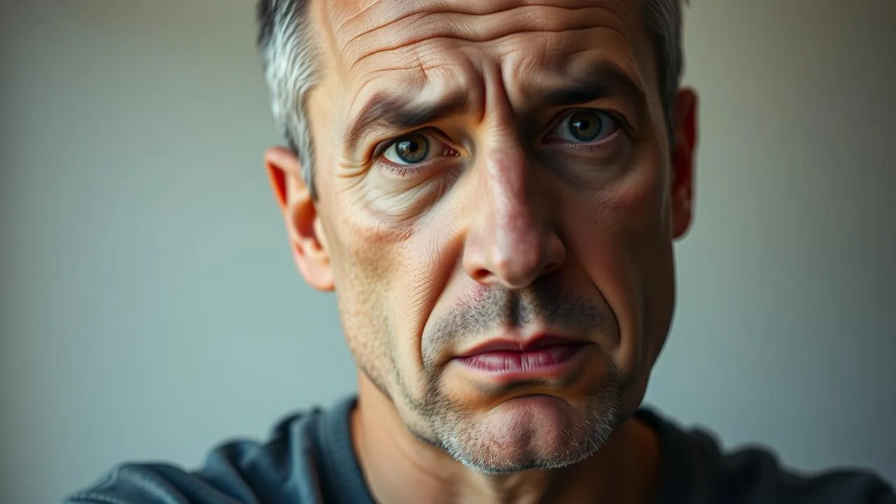

Emotional exhaustion vs burnout are two terms people often use interchangeably, but they're not the same thing. Understanding the difference could be the key to actually recovering instead of just managing symptoms.
You might feel drained, empty, and unable to cope, but that doesn't automatically mean you're burned out. Sometimes it's emotional exhaustion, which is actually the first stage of burnout. Knowing which one you're experiencing changes everything about how you heal.
This article breaks down what each one really means, the signs you should watch for, and most importantly, how to take back your energy and mental peace starting today.
Emotional exhaustion vs burnout: emotional exhaustion is the feeling of being mentally drained and depleted, often the first stage of burnout. Burnout includes emotional exhaustion plus cynicism and reduced effectiveness. Recovery requires rest, boundaries, and professional support when needed.
What Is the Difference Between Emotional Exhaustion and Burnout?
Emotional exhaustion is the feeling of being emotionally drained and depleted. It happens when you've given so much of yourself that your emotional reserves are completely empty. According to burnout research, emotional exhaustion is actually the first dimension of burnout, not a separate condition entirely.
Burnout, on the other hand, has three components: emotional exhaustion, cynicism (feeling detached and negative), and reduced professional efficacy (feeling like you can't accomplish anything). You can experience emotional exhaustion without being fully burned out, but burnout always includes emotional exhaustion as its foundation.
Here's the practical distinction: If you're emotionally exhausted, you feel tired and drained. If you're burned out, you feel tired, drained, cynical, and like nothing you do matters anymore. One is a symptom; the other is a full syndrome.
- Emotional exhaustion: energy tank is empty
- Burnout: empty tank plus disconnection from your work and life
- Burnout: persistent feeling of ineffectiveness
- Emotional exhaustion: can happen from any demanding situation
- Burnout: typically develops from chronic workplace or life stress
The key action: Recognize which one applies to you right now. If it's just emotional exhaustion, targeted rest and boundary-setting might be enough. If it's burnout, you likely need more comprehensive changes to your situation or professional support.
What Are the Signs of Emotional Exhaustion vs Burnout?
Emotional exhaustion symptoms include constant fatigue that sleep doesn't fix, difficulty concentrating, feeling overwhelmed by small tasks, and emotional numbness. You might cry easily or feel irritable for no clear reason. Your body feels heavy, and even simple decisions feel impossible.
Burnout symptoms go deeper. Beyond the exhaustion, you'll notice cynicism about your work or life, a sense of failure or ineffectiveness, depersonalization (treating people like objects), and a fundamental loss of passion for things you once loved. Studies show that 72% of professionals experience at least one burnout symptom weekly, but fewer recognize it as burnout rather than just being tired.
Watch for these emotional exhaustion red flags:
- Persistent tiredness even after rest or sleep
- Trouble focusing on tasks or conversations
- Feeling emotionally overwhelmed by minor issues
- Physical symptoms like headaches or chest tightness
- Loss of motivation or joy in activities
- Irritability or mood swings without explanation
These burnout warning signs suggest something deeper:
- All emotional exhaustion symptoms plus cynicism
- Feeling detached from people and work
- Believing your efforts don't matter or won't succeed
- Withdrawal from relationships and social activities
- Using unhealthy coping mechanisms (excessive alcohol, overeating, sleeping too much)
- Persistent sense of failure despite accomplishments
Your action step: Take 10 minutes today and honestly assess which symptoms resonate with you. Write them down. This clarity is your first step toward recovery.
Why Does Emotional Exhaustion Happen and How Does It Lead to Burnout?
Emotional exhaustion develops when your emotional demands exceed your emotional resources for an extended period. This could come from caregiving, high-stress work, relationship conflicts, or even chronic self-criticism. Your brain and nervous system use up their available emotional energy, and without proper recovery, the tank stays empty.
The progression to burnout happens gradually. First comes emotional exhaustion. Then, as you continue operating from an empty tank, your mind protects itself by creating emotional distance. You stop caring as much because caring hurts when you have nothing left to give. Cynicism develops as a defense mechanism. Finally, you stop believing in your ability to make a difference, and reduced efficacy sets in.
Research shows the timeline matters: Emotional exhaustion can develop in weeks of intense stress, but burnout typically requires months or years of chronic depletion. This is why catching emotional exhaustion early and addressing it prevents progression to full burnout.
- Emotional exhaustion causes: overwork, inadequate recovery time, lack of boundaries, constant emotional labor
- Burnout accelerators: unaddressed emotional exhaustion, lack of autonomy, unclear expectations, insufficient reward
- The stress cycle: chronic stress leads to exhaustion leads to cynicism leads to burnout
- Prevention window: emotional exhaustion is when intervention works best
Your recovery strategy: If you're experiencing emotional exhaustion, treat it as an urgent signal, not a character flaw. Your system is telling you it needs rest, boundaries, or a significant change. Address it now before it progresses to full burnout.

How to Recover From Emotional Exhaustion and Prevent Burnout
Recovery from emotional exhaustion requires genuine rest and restoration, not just taking a weekend off. You need to identify what's draining your emotional reserves and either remove it, reduce it, or change your relationship with it. This might mean setting boundaries at work, stepping back from a demanding relationship, or getting professional support.
Studies on burnout recovery show that 40% of people who take a break without addressing the underlying causes experience exhaustion again within three months. The key is combining rest with meaningful change in your situation or mindset.
Immediate steps to address emotional exhaustion:
- Take a complete break from the source of exhaustion (take time off work, step back from a draining responsibility)
- Prioritize sleep and physical rest without guilt
- Reduce decision-making burden by simplifying your daily schedule
- Spend time with people who restore your energy, not deplete it
- Engage in activities that refill your emotional tank (time in nature, creative pursuits, physical movement)
Longer-term changes to prevent burnout:
- Establish firm boundaries between work and personal time
- Learn to say no without over-explaining or feeling guilty
- Build recovery rituals into your weekly routine
- Seek professional help if exhaustion doesn't improve in 2-3 weeks
- Address perfectionism and unrealistic self-expectations
- Cultivate activities and relationships that feel meaningful, not obligatory
Related resources can help: Learn more about how to reduce stress naturally and discover emotional burnout recovery strategies that work for your specific situation.
Your action today: Identify one source of emotional drain in your life right now. Commit to reducing your engagement with it by just 10% this week. That small boundary is the beginning of recovery.
What Daily Habits Help Manage Emotional Exhaustion and Prevent Burnout?
Building sustainable recovery habits is more effective than trying to fix burnout after it's fully developed. Daily practices that protect your emotional energy create a buffer against depletion. Even small habits compound over weeks into significant resilience.
Research on stress resilience shows that people who practice daily restoration habits experience 35% less burnout symptoms than those who rely on occasional breaks. Consistency matters more than intensity.
Daily habits that protect your emotional reserves:
- Morning centering practice (5-10 minutes of breathing, journaling, or meditation before engaging with demands)
- Scheduled breaks during work that actually feel restorative (not scrolling, but real disconnection)
- One activity daily that brings you genuine joy or peace, not obligation
- Evening wind-down ritual that signals to your nervous system that it's safe to rest
- Saying no to at least one non-essential request or commitment weekly
- Connecting with one person who energizes rather than depletes you
Protective practices that build emotional resilience:
- Physical activity: 20-30 minutes daily reduces stress hormones and restores emotional capacity
- Sleep prioritization: 7-9 hours nightly is non-negotiable for emotional recovery
- Boundary maintenance: Consistent practice saying no prevents accumulated resentment
- Meaning-making: Time on activities aligned with your values restores purpose
- Professional support: Regular therapy or coaching prevents minor issues from becoming major burnout
For additional support in managing daily stress and anxiety, explore how to deal with anxiety daily and learn how to calm your mind instantly when you feel overwhelmed.
Start this week: Choose two of these habits that resonate most with you. Commit to them for 14 days. After two weeks, notice how your energy, mood, and resilience have shifted. That's proof that you can recover.
What Does This Look Like in Real Life?
Sarah worked in healthcare for seven years, always giving everything to her patients. By year six, she felt constantly exhausted. Sleep didn't help. She'd cry at small frustrations and couldn't focus on charts. Her friends said she seemed different, distant. She recognized the emotional exhaustion hitting hard but pushed through, thinking a vacation would fix it. It didn't.
By month eight of untreated exhaustion, Sarah had progressed to burnout. She felt cynical about patients she'd once cared deeply for. She stopped applying for promotions because nothing mattered anymore. A conversation with her therapist made her realize the difference: emotional exhaustion had become full burnout. She took a medical leave, worked with her therapist on boundaries and identity beyond work, and returned part-time with clear limits. Eighteen months later, she still works in healthcare, but she protects her emotional reserves fiercely. She recognizes the early warning signs now and acts immediately rather than pushing through.
Related Articles
Frequently Asked Questions
Where to Go From Here
Emotional exhaustion vs burnout matters because the difference changes everything about how you recover. One is a signal that something needs to change; the other is a full-system shutdown that requires comprehensive intervention. The good news is that catching emotional exhaustion early gives you a real window to prevent burnout from developing.
You don't have to white-knuckle your way through feeling drained and empty. Your exhaustion is real, it's not a character flaw, and it's absolutely fixable. Start today by identifying one boundary you'll set or one thing you'll stop doing. That single action is the beginning of your recovery.
Tomorrow, do one thing that genuinely refills your emotional tank. Not because you should, but because you deserve to feel present and capable again. Small, consistent actions over weeks create profound transformation. You've got this.